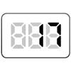

【017】return を使う関数

- プロンプト例
JavaScriptで関数のreturn を使う問題を５問作成して
🔰 return の超かんたん解説
function add(a, b) { return a + b; }
👉 return は 関数の外に値を持ち帰る 命令です。
let result = add(3, 5); console.log(result); // 8
return を使う練習問題【超初心者向け】
問題1：数字をそのまま返す関数
受け取った数字をそのまま返す関数 を作ってください。
仕様
- 関数名：returnNumber
- 引数：num
- 戻り値：num
実行例
console.log(returnNumber(5));
出力例
5
問題2：2つの数を足して返す関数
2つの数を足した結果を返す関数 を作ってください。
仕様
- 関数名：sum
- 引数：a, b
- 戻り値：a + b
実行例
console.log(sum(3, 7));
出力例
10
問題3：名前の文章を作って返す関数
名前を受け取り、自己紹介文を作って返す関数 を作ってください。
仕様
関数名：createMessage- 引数：name
- 戻り値：「私の名前は〇〇です」
実行例
console.log(createMessage(`さくら`));
出力例
私の名前はさくらです
問題4：数字を2倍にして返す関数
数字を受け取り、2倍した値を返す関数 を作ってください。
仕様
- 関数名：double
- 引数：num
実行例
console.log(double(6));
出力例
12
問題5：偶数か奇数かを判定して返す関数
数字を受け取り、「偶数」または「奇数」を返す関数 を作ってください。
仕様
- 関数名：checkEvenOdd
- 引数：num
- 戻り値：
- 偶数 → "偶数"
- 奇数 → "奇数"
実行例
console.log(checkEvenOdd(8)); console.log(checkEvenOdd(5));
出力例
偶数 奇数
✅ 解答例
// 問題1：数字をそのまま返す関数 function returnNumber(num) { return num; } console.log(returnNumber(5)); // 問題2：2つの数を足して返す関数 function sum(a, b) { return a + b; } console.log(sum(3, 7)); // 問題3：名前の文章を作って返す関数 function createMessage(name) { return `私の名前は${name}です`; } console.log(createMessage(`さくら`)); // 問題4：数字を2倍にして返す関数 function double(num) { return num * 2; } console.log(double(6)); // 問題5：偶数か奇数かを判定して返す関数 function checkEvenOdd(num) { if (num % 2 === 0) { return `偶数`; } else { return `奇数`; } } console.log(checkEvenOdd(8)); console.log(checkEvenOdd(5));
🔰 超重要ポイント
❌ console.log と return の違い
function sample1() { console.log(10); } function sample2() { return 10; }
実行結果の違い
console.log(sample1()); // undefined console.log(sample2()); // 10
👉 return は「値を返す」
👉 console.log は「表示するだけ」